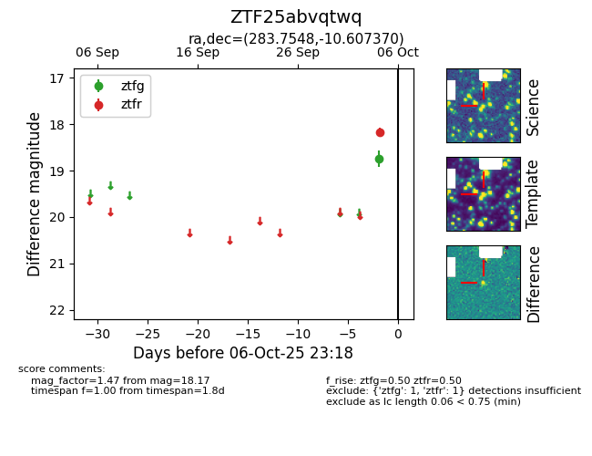

FINK: ZTF25abvqtwq
Lasair: ZTF25abvqtwq
ALeRCE: ZTF25abvqtwq
ZTF25abvqtwq (ztf,fink)
equatorial (ra, dec) = (283.7548,-10.60737)
galactic (l, b) = (23.8657,-5.60130)

last ztfg=18.74, ztfr=18.17
1 ztfg, 1 ztfr detections